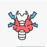

Hyperthyroidism
Rx
1.Tab Methimazole 5mg N=100 q8h
2.Tab Propranolol 10mg N=100 q8h
نکته1: درصورت شدید بودن علائم میتوان دوز دوبرابر کرد.
نکته2: بعد از 6هفته مجددا T3 T4 چک میکنیم.(TSH ارزشی ندارد)
نکته3: عوار ض متی مازول (کهیر،راش، ایکتر، تبو لرز و...) به بیمار میگیم در صورت بروز علائم دارو قطع کند
C Group : Methimazole, Propranolol
✳️تپش قلب
✳️افزایش تعریق
✳️ترمور
✳️عدم تحمل گرما
✳️دیس پنه در هنگام ورزش
✳️اضطراب
✳️بی قراری
✳️خستگی
✳️ضعف عضلانی
✳️افزایش حرکات روده و اسهال
✳️کاهش وزن
✳️ریزش مو
✳️کاهش میل جنسی
✳️الیگومنوره یا آمنوره
1️⃣ بیماری گریوز
Destructive thyroiditis 2️⃣
Solitary thyroid nodule 3️⃣
Toxic multinodular goiter 4️⃣
Iodine-induced hyperthyroidism 5️⃣
Radiation-induced thyrotoxicosis 6️⃣
Pituitary TSH-secreting adenoma 7️⃣
8️⃣ مقاومت به هورمون تیروئیدی
Factitious thyrotoxicosis 9️⃣
🔟 Anticholinergic Toxicity
Sympathomimetic Toxicity 1️⃣1️⃣
1️⃣2️⃣ دلیریوم ترمنس
1️⃣3️⃣ نارسایی قلبی
Heat Exhaustion and Heatstroke 1️⃣4️⃣
Neuroleptic Malignant Syndrome 1️⃣5️⃣
1️⃣6️⃣ اختلال پانیک
1️⃣7️⃣ اختلال اضطرابی
1️⃣8️⃣ شوک سپتیک